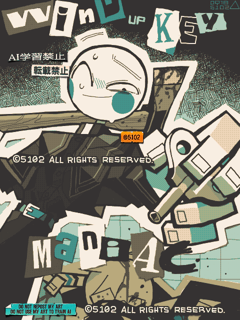

Made with
Tegaki Editor
手書きブログで描いたもの。
手ブロには丸顔人外とか棒人間描いてる人がほぼ皆無なので、場違い感がすごい。
彼はQyasilagi（クャシラギ）さんというOCだ。彼はおもちゃの住民達が背負っている大きなゼンマイ鍵に目がなく、彼らを殺してでもゼンマイ鍵をコレクションしたがる変質者である。
手書きブログが面白すぎて完全にハマってしまった。デジタルでお絵描きするのに、レイヤーもバケツも無くたって困らないということを証明した。
キャンバスの拡大はできるが、キャンバスの回転ができないので、タブレットだと楽だがノートパソコンで描くのは大変すぎる。キャンバスではなく自分を回転させないといけないので、つらい姿勢になる。
それでも機能が少なすぎるお絵描きソフトは、機能が多すぎて複雑なソフトよりも好きだ。
さて、例のタブレットPCだが、なんとなく動作が重いという偏見を持っていた「Chrome」を入れてみたところ、他のブラウザよりも一番軽快に動いてくれた。
がしかし、絵を描き進めるうちにだんだん重くなってきて、最終的には他のブラウザと同じような挙動になってしまった。スタイラスペンを動かしても線がついてこない。引いた線がカクカクすぎて、円を描いても多角形になってしまう。
このクソ雑魚タブレットめ！
2023/09/18
 ぜんまいコレクター（OC）
ぜんまいコレクター（OC）